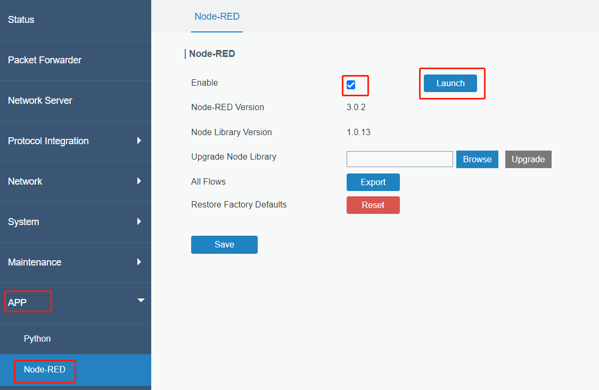
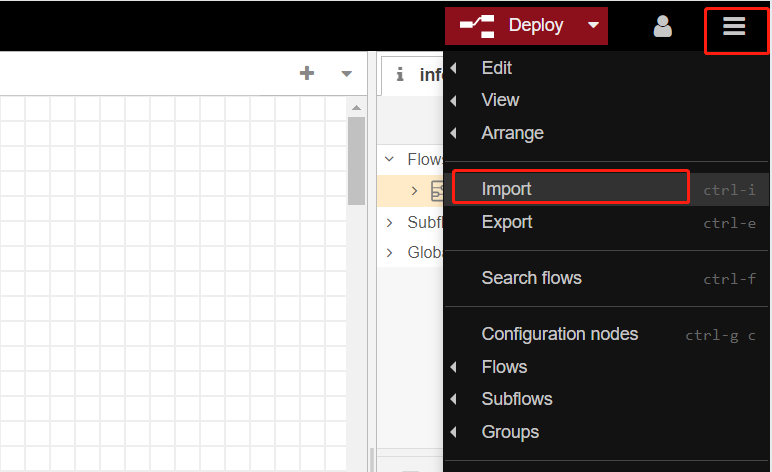
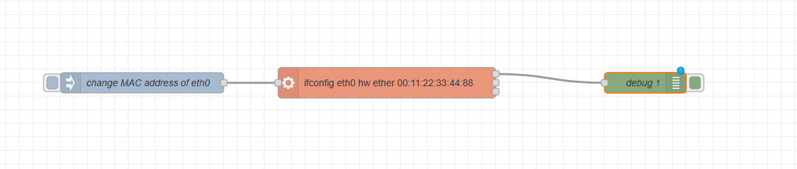
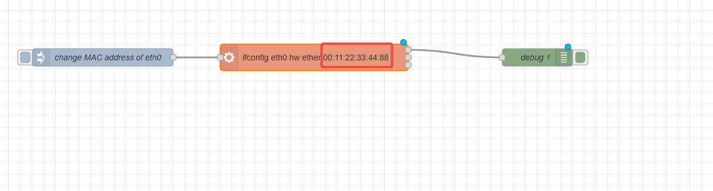
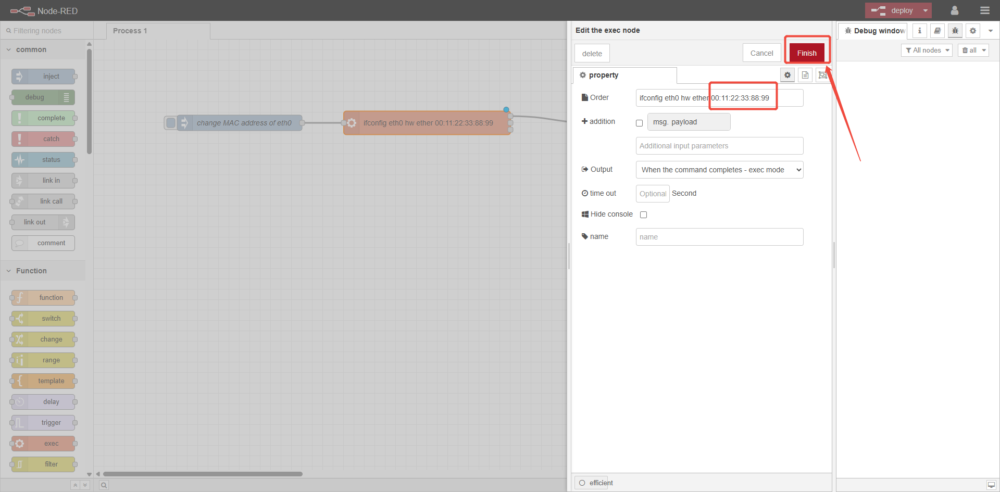
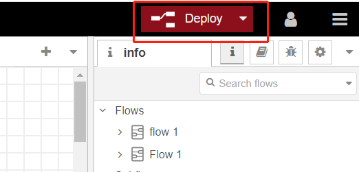
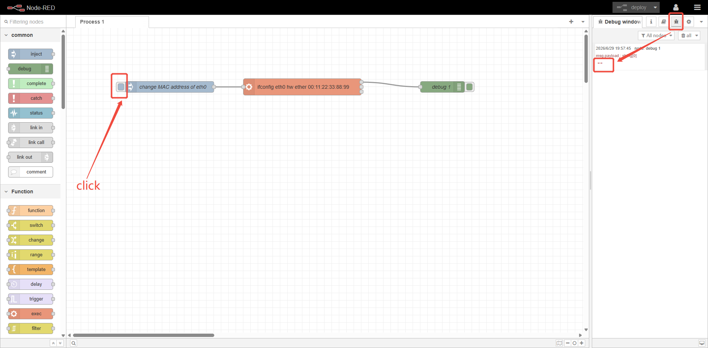

How to use Node-Red to modify the MAC address of the eth0 network interface of the gateway

How to use Node-Red to modify the MAC address of the eth0 network interface of the gateway
| Version | Update Time | Description | Author |
| 1.0 | June.29, 2026 | Initial version | Charles |
Description
This article will guide you on how to modify the MAC address of the Eth0 network interface using the built-in Node-Red feature of the Milesight UG gateway.
Requirement
Milesight Gateway: UG56/UG65/UG67
Configuration
Step 1: Launch Node-RED and Import Flow Example
Go to App > Node-RED page to enable Node-RED program and wait for a while to load the program, click Launch button to start Node-RED web GUI.

Log in the Node-RED web GUI. The account information is the same as gateway web GUI.

Click Import to import the node-red flow example by pasting the content or import the json format file.


Step 2: Node-RED Configuration
Flow structure:

Content:
| [{"id":"b869b81e42313c8b","type":"tab","label":"流程 1","disabled":false,"info":"","env":[]},{"id":"d2acd974b1adb254","type":"inject","z":"b869b81e42313c8b","name":"change MAC address of eth0","props":[],"repeat":"","crontab":"","once":false,"onceDelay":0.1,"topic":"","x":280,"y":160,"wires":[["f7efa74a4174d969"]]},{"id":"f7efa74a4174d969","type":"exec","z":"b869b81e42313c8b","command":"ifconfig eth0 hw ether 00:11:22:33:44:88","addpay":"","append":"","useSpawn":"false","timer":"","winHide":false,"oldrc":false,"name":"","x":640,"y":160,"wires":[["1e5e1c9e6aa89092"],[],[]]},{"id":"1e5e1c9e6aa89092","type":"debug","z":"b869b81e42313c8b","name":"debug 1","active":true,"tosidebar":true,"console":false,"tostatus":false,"complete":"false","statusVal":"","statusType":"auto","x":1020,"y":120,"wires":[]}] |
Step 3: Configure the flow
Double-click on the EXEC node, replace 00:11:22:33:44:88 with your desired MAC address, and then click Deploy.


Click Deploy to save all node-red configurations.

Step 4: Execute the flow
Clicking the inject node will trigger a change to the MAC address of the eth0 gateway. After the modification is successful, you will notice that the debug node outputs ""

-------END-----